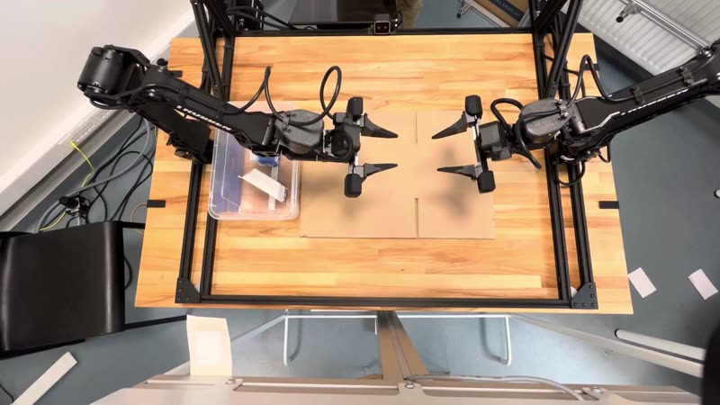
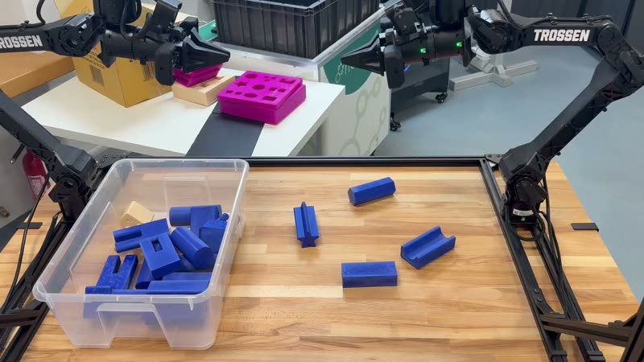

Motivation and Overview
What does it take to fly a drone?
1 · differential equations
the state of a system, constraints, phase space
2 · PID control
feedback, the three terms on a drone, several controllers at once, transfer functions
3 · simulation engines
numerical integration and its time step, simulating deformation, the same ideas in flow matching
The state of a system
A set $\vec q$ of parameters (coordinates) whose values determine the state of the system
A double pendulum
The population of the world by level of education
Derivatives describe change
We often refer to derivatives with names from physics: velocity $\dot{\vec q}$ or acceleration $\ddot{\vec q}$
A double pendulum
The population of the world by level of education
Constraints
Usually the system has to satisfy constraints: the state is somehow restricted
$g\big(\vec q, \dot{\vec q}, t\big) = 0$
Holonomic: no derivatives
rod lengths, which may depend on time (e.g., stretching)
Nonholonomic: derivatives
the car cannot move sideways: $\dot x \sin\varphi = \dot y \cos\varphi$
Generalised coordinates
Degrees of freedom (DoF) = #parameters − #holonomic constraints
- we can choose any set of parameters to describe the system
- often the most convenient one has #parameters = #DoF
A double pendulum
4 coordinates, 2 holonomic constraints
representation
2 DoF: $\vec q = (\theta_1, \theta_2)$
Differential equations
A differential equation determines how the highest derivative depends on the lower ones: $\;q^{(n)} = f\big(\vec q, \dot{\vec q}, \ldots, q^{(n-1)}, t\big)$, an ODE of order $n$
Example:
Every ODE can be made first order
Any $n$-th order ODE can be made first order, by changing the state description:
$\dot{\vec q} = f(\vec q(t), t)$
The pendulum: $\ddot\theta = -\frac{g}{L}\sin\theta - \mu\,\dot\theta$, state $\vec q = (\theta, \omega)$, $\omega = \dot\theta$:
$\dot{\vec q} = \begin{bmatrix}\dot\theta\\ \dot\omega\end{bmatrix} = \begin{bmatrix} \omega \\ -\frac{g}{L}\sin\theta - \mu\,\omega\end{bmatrix} = f(\vec q)$
Differential equations for a drone
A controller: the general idea
PID: proportional, integral, derivative
$e=H-z$
If some terms are missing, we have a P, PD, PI… controller.
The proportional term
$e=H-z$
The P controller: shrinking oscillations
$e=H-z$
The derivative term
$e=H-z$
The PD controller: what happened
$e=H-z$
The integral term
$e=H-z$
The PID controller: what happened
$e=H-z$
Several PID controllers at once
In real life we often have multiple PID controllers interacting with each other:
- the rotor speed has to react quickly (e.g. to a gust of wind) to keep the desired velocity
- corrections to the altitude should come at a much slower rate, e.g. to average the measurement over time and get rid of the noise
Transfer functions: the general idea
We started dealing with many interconnected blocks:
- a vast topic: if you see it for the first time, do not try to process everything at once
- from the perspective of this course it is enough to treat it as a black-box tool
Without transfer functions: the profile of a block
What is the profile of a block? Feed it a single impulse (a Dirac delta): the output it produces is the profile, $g(t)$. Also called the impulse response.
A Dirac delta: the limit of narrower and narrower bumps with the same area $1$.
Without transfer functions: the output for any input
Split the input into impulses → shift and scale the profile → add the outputs.
Convolution: the sum over all impulses.
The problem is…
Computing a convolution of a convolution is hard.
Transfer functions
It turns out we can use the Laplace transform $\mathcal L$:
Transfer functions: the PID controller
Integration becomes a division by $s$, differentiation a multiplication by $s$. The whole controller is one algebraic expression, $K(s) = k_p + k_i/s + k_d\,s$, and chaining blocks is multiplying such expressions.
Intuition behind the Laplace transform Optional further reading
Examples and motivation
Simulation means numerical integration
$\mathbf q=(x,\dot x)$
The arrow $f(\mathbf q)$ at the current point
Follow the arrow, then repeat from the new state.
Example: explicit Euler
$$\underbrace{f(\mathbf q,t) = \dot{\mathbf q}(t)}_{\text{DE of our system}}\approx\frac{\mathbf q(t+\Delta t)-\mathbf q(t)}{\Delta t} \quad\Longrightarrow\quad \mathbf q(t+\Delta t)\approx\mathbf q(t)+\Delta t\,f(\mathbf q(t),t)$$Repeated updates trace how the state evolves.
What can go wrong in a simulation?
A spring without damping: the exact trajectory is a closed orbit (green), the energy is conserved.
- every Euler step follows the arrow at the current point, which is a tangent of the orbit: it always lands slightly outside
- the errors add up: the state spirals outwards, the simulated spring gains energy from nothing
- make $\Delta t$ smaller and compare
More precise numerical schemes
There are different ways to approximate $\dot{\mathbf q}$. Start with the Taylor expansion:
Subtracting the two Taylor expansions cancels the even powers. The central difference’s error scales as $\Delta t^2$: halve the step → quarter the error.
Explicit Euler · $\Delta t=0.3$
Runge–Kutta (RK4) · $\Delta t=0.3$
RK4 uses four rate evaluations per step: smaller error at the same $\Delta t$. Green: exact trajectory.
A wrong time step for the P-controlled drone
The drone simulator used in the lab sessions, with a P controller on the altitude and nothing else changed between the two runs:
the correct version: $\Delta t = 0.01$
the time step increased just to $\Delta t = 0.04$
With the larger step the oscillation grows instead of dying out, until the drone hits the floor and breaks. The drone, the controller and the gains did not change.
A wrong time step for the P-controlled drone: the plot
the correct version: $\Delta t = 0.01$
the time step increased just to $\Delta t = 0.04$
Our toy simulation, starting at $z=0.3$ m and played at $0.75\times$ speed: the oscillation grows until the drone lands too hard. Try RK4 with the same $\Delta t$: a better integrator survives the larger step.
A note on the rendering speed
At 1× we display 20 stored steps/s. Increasing $\Delta t$ from 0.05 to 0.2 s or using 4× playback both shorten the full run from 12 to 3 wall-clock seconds. Only changing $\Delta t$ changes the trajectory.
Simulating deformation
Cloth, jelly, snow, sand, fluids: a continuous body is cut into small parts, and the simulator keeps track of how each part moves and deforms. A field of its own; simulation engines do it for you.
Flow Matching & Diffusion: Deforming probability
We can easily sample from known distributions
Deformable simulations: studied for decades
Combine the two ideas to generate samples from the distribution of interest
Example application: π0 - idea
In action
Also at MIMUW :)



At MIMUW: flow-matching and diffusion policies for bimanual manipulation, trained from demonstrations. If you want to work on this, talk to us.
Summary
References and more on these topics
PID control
- Brian Douglas, lectures on PID control (playlist)
- Brian Douglas, transfer functions
- Zach Star, the Laplace transform, a visual explanation
- S. W. Smith, convolution, chapter 6 of The Scientist and Engineer's Guide to DSP
Differential equations, simulation engines & flow matching
- 3Blue1Brown, Differential equations, a tourist's guide
- Steve Brunton, numerical differentiation and integration (playlist)
- C. Jiang et al., The material point method for simulating continuum materials (SIGGRAPH course)
- MuJoCo
- For flow matching: see my DNN lecture and the references there